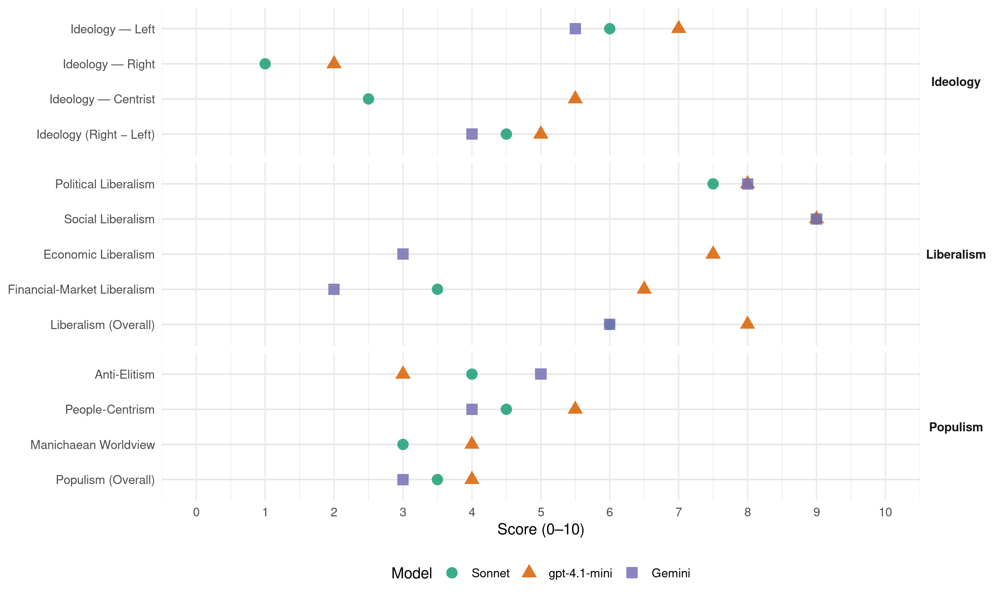

(Canada, 2021)
manifesto_id 62110_202109
Get full text: This site shows derived annotations and short verbatim quotes only. The full manifesto text is © Manifesto Project / WZB — obtain it via manifesto-project.wzb.eu using the manifesto_id above.
Headline scores
| Dimension | Sonnet | gpt-4.1-mini | Gemini |
|---|---|---|---|
| Populism (Overall) | 3.5 | 4.0 | 3.0 |
| Anti-Elitism | 4.0 | 3.0 | 5.0 |
| People-Centrism | 4.5 | 5.5 | 4.0 |
| Manichaean Worldview | 3.0 | 4.0 | – |
| Ideology (Right − Left) | 4.5 | 5.0 | 4.0 |
| Liberalism (Overall) | 6.0 | 8.0 | 6.0 |
| Political Liberalism | 7.5 | 8.0 | 8.0 |
| Social Liberalism | 9.0 | 9.0 | 9.0 |
| Economic Liberalism | – | 7.5 | 3.0 |
| Financial-Market Liberalism | 3.5 | 6.5 | 2.0 |
Evidence per dimension
Economic Liberalism
Gemini · score 3.0 · verified · chunk 1
“raising taxes on environmentally harmful goods and services”
disincentivize unsustainable investments (such as by raising taxes on environmentally harmful goods and services). Invest in the cleantech sector and in renewable
Gemini · score 3.0 · verified · chunk 2
“Shift the direction of international trade away from”
Shift the direction of international trade away from “free trade” to “fair trade”
gpt-4.1-mini · score 8.0 · verified · chunk 1
“Reduce wealth inequality in Canada. Ensure that current wealth holders, particularly those in the fossil fuel sector, pay their fair share.”
Replace every high paying fossil fuel sector job with a high paying green sector job through wage insurance, retraining programs and early retirement plans. Reduce wealth inequality in Canada. Ensure that current wealth holders, particularly those in the fossil fuel sector, pay their fair share. Close tax havens and loopholes to redistribute wealth towards communities that have been underinvested in.
gpt-4.1-mini · score 7.0 · verified · chunk 2
“Increase the federal corporate tax rate from 15 to 21 per cent”
Increase the federal corporate tax rate from 15 to 21 per cent to bring it into line with the federal rate in the United States, our biggest trading partner. Mark Carney, former Governor of the Bank of Canada, said corporations are holding “hundreds of billions of dollars in their bank accounts,” rather than reinvesting in the economy. This dead money needs to be mobilized for the transition to a green, renewable economy.
Sonnet · score 5.0 · mixed · chunk 1
“Hold the small business tax rate at no more than 9%”
Hold the small business tax rate at no more than 9%. Reduce the paperwork burden on small businesses by eliminating duplicative tax filings and red tape.
Sonnet · score 4.0 · mixed · chunk 2
“Increase the federal corporate tax rate from 15 to 21 per cent”
Increase the federal corporate tax rate from 15 to 21 per cent to bring it into line with the federal rate in the United States, our biggest trading partner.
Financial-Market Liberalism
Gemini · score 2.0 · verified · chunk 1
“divest from fossil fuels”
Pension Plan Investment Board) to divest from fossil fuels Ensure companies are held accountable for paying for the
Gemini · score 2.0 · verified · chunk 2
“Impose a financial transactions tax of 0.5 per cent”
Impose a financial transactions tax of 0.5 per cent in the finance sector as France has done since 2012.
gpt-4.1-mini · score 7.0 · verified · chunk 1
“Require federal public investment funds (including the Canada Pension Plan Investment Board) to divest from fossil fuels”
End all subsidies to the fossil fuel sector Phase out existing oil and gas operations, so that they continue on a declining basis with bitumen production phased out between 2030 and 2035 Require federal public investment funds (including the Canada Pension Plan Investment Board) to divest from fossil fuels Ensure companies are held accountable for paying for the costs of cleaning up and restoring land, instead of passing these to the public
gpt-4.1-mini · score 6.0 · verified · chunk 2
“Apply a financial transactions tax of 0.5 per cent in the finance sector”
Apply a financial transactions tax of 0.5 per cent in the finance sector as France has done since 2012. Increase the federal corporate tax rate from 15 to 21 per cent to bring it into line with the federal rate in the United States, our biggest trading partner. Mark Carney, former Governor of the Bank of Canada, said corporations are holding “hundreds of billions of dollars in their bank accounts,” rather than reinvesting in the economy.
Sonnet · score 4.0 · verified · chunk 1
“Assess the role of real estate investment trusts”
Assess the role of real estate investment trusts (REITs) in Canada’s housing market. Close tax haven loopholes that allow foreign investors to hide the names of beneficial owners of properties in Canada.
Sonnet · score 3.0 · verified · chunk 2
“financial transactions tax of 0.5 per cent in the finance sector”
Impose a financial transactions tax of 0.5 per cent in the finance sector as France has done since 2012.
Political Liberalism
Gemini · score 8.0 · verified · chunk 1
“Democratic Reform”
Immigration and Refugee Issues ● International Affairs and Defence ● Democratic Reform ● Arts, Culture, and Heritage ● Fair Taxation
Gemini · score 8.0 · verified · chunk 2
“The strength of Canada’s democracy is consistently rated”
DEMOCRATIC REFORM The strength of Canada’s democracy is consistently rated amongst the highest in the world
gpt-4.1-mini · score 8.0 · verified · chunk 1
“Democratic Reform”
III. Just Society ● Reconciliation with Indigenous Peoples and upholding the right to self-determination ● Dismantling systemic discrimination in public institutions ● Tackling identity based hate ● Criminal Justice Reform ● Immigration and Refugee Issues ● International Affairs and Defence ● Democratic Reform ● Arts, Culture, and Heritage ● Fair Taxation ● Youth
gpt-4.1-mini · score 8.0 · verified · chunk 2
“Strengthen the Conflict of Interest Act to include financial and other penalties”
Strengthen the Conflict of Interest Act to include financial and other penalties for politicians who break Conflict of Interest laws. Impose strict conflict of interest screening criteria for appointments to federal regulatory boards and agencies, minimizing the potential for bias and preferential access by the regulated industry. Allow an independent oversight committee to review MPs’ salaries, expenses and office budgets, replacing the secretive Board of Internal Economy. Strengthen the Lobbying Act to require greater transparency and prevent “revolving doors” between political life, the public service and lobbying. Strengthen whistle-blower protections for public service employees and reaffirm the independence and integrity of the public service. Expand the Access to Information Act to include the Prime Minister’s Office, minister’s offices, and administration of parliament.
Sonnet · score 7.0 · verified · chunk 1
“non-partisan, collaborative approach to the climate emergency”
We have been calling for a non-partisan, collaborative approach to the climate emergency for years.
Sonnet · score 8.0 · verified · chunk 2
“Strengthen the Conflict of Interest Act”
Strengthen the Conflict of Interest Act to include financial and other penalties for politicians who break Conflict of Interest laws.
Liberalism (Overall)
Gemini · score 6.0 · verified · chunk 1
“Dismantling systemic discrimination in public institutions”
Reconciliation with Indigenous Peoples and upholding the right to self-determination ● Dismantling systemic discrimination in public institutions ● Tackling identity based hate ● Criminal
Gemini · score 6.0 · verified · chunk 2
“The strength of Canada’s democracy is consistently rated”
DEMOCRATIC REFORM The strength of Canada’s democracy is consistently rated amongst the highest in the world
gpt-4.1-mini · score 8.0 · verified · chunk 1
“Dismantling systemic discrimination in public institutions”
III. Just Society ● Reconciliation with Indigenous Peoples and upholding the right to self-determination ● Dismantling systemic discrimination in public institutions ● Tackling identity based hate ● Criminal Justice Reform ● Immigration and Refugee Issues ● International Affairs and Defence ● Democratic Reform ● Arts, Culture, and Heritage ● Fair Taxation ● Youth
gpt-4.1-mini · score 8.0 · verified · chunk 2
“Strengthen the Conflict of Interest Act to include financial and other penalties”
Strengthen the Conflict of Interest Act to include financial and other penalties for politicians who break Conflict of Interest laws. Impose strict conflict of interest screening criteria for appointments to federal regulatory boards and agencies, minimizing the potential for bias and preferential access by the regulated industry. Allow an independent oversight committee to review MPs’ salaries, expenses and office budgets, replacing the secretive Board of Internal Economy. Strengthen the Lobbying Act to require greater transparency and prevent “revolving doors” between political life, the public service and lobbying. Strengthen whistle-blower protections for public service employees and reaffirm the independence and integrity of the public service. Expand the Access to Information Act to include the Prime Minister’s Office, minister’s offices, and administration of parliament.
Sonnet · score 6.0 · verified · chunk 1
“Ensure the right to a healthy environment, enforceable in law”
Modernize the Canadian Environmental Protection Act… Ensure the right to a healthy environment, enforceable in law. Prevent exposures to toxins and pollution…
Sonnet · score 6.0 · verified · chunk 2
“Ban and condemn the practice of conversion therapy”
Ban and condemn the practice of conversion therapy, in all its forms. Ensure access to comprehensive sexual health care and gender affirming health care
Anti-Elitism
Gemini · score 6.0 · verified · chunk 1
“partisan ambition, and common sense has lost out”
election. Public health has lost out to partisan ambition, and common sense has lost out to the quest for power. It is now up to
Gemini · score 4.0 · verified · chunk 2
“corporations and the wealthiest individuals have more control”
many people feel like their votes and their voice don’t make a difference, and share a sense that corporations and the wealthiest individuals have more control than the rest of us.
gpt-4.1-mini · score 3.0 · verified · chunk 1
“Public health has lost out to partisan ambition”
Instead, we find ourselves in an election. Public health has lost out to partisan ambition, and common sense has lost out to the quest for power. It is now up to you what happens next and who will be sent to Ottawa to work for you.
gpt-4.1-mini · score 3.0 · verified · chunk 2
“many people feel like their votes and their voice don’t make a difference”
Trust in democracy has been declining, both in Canada, and worldwide. Cynicism and political polarization are increasing. Even Canada’s strongest allies, longstanding liberal democracies, have faced serious threats to their democratic processes. In the same way that we renovate our historic buildings, it’s time to renovate the 19th-century foundations of our democracy: retaining the strongest parts of our traditions, while bringing our democratic systems up to date, ready to face the many challenges of the modern era. The newest emerging threat to our democratic practices is the rapid spread of misinformation and disinformation through online echo-chambers. Diversity of values and perspectives leads to productive and democratic dialogue, only in the presence of an agreed set of verifiable, evidence-based facts. Many people feel like their votes and their voice don’t make a difference, and share a sense that corporations and the wealthiest individuals have more control than the rest of us.
Sonnet · score 4.0 · verified · chunk 1
“Transnational corporations have benefited directly from taxpayer-funded policies”
These systems are supported by high levels of inputs… Transnational corporations have benefited directly from taxpayer-funded policies and programs and now control a large share of our food supply
Sonnet · score 4.0 · verified · chunk 2
“corporations and the wealthiest individuals have more control”
many people feel like their votes and their voice don’t make a difference, and share a sense that corporations and the wealthiest individuals have more control than the rest of us
Ideology — Centrist
gpt-4.1-mini · score 5.0 · verified · chunk 1
“a party that is matched to the moment because it believes that big things are still ahead for Canada”
In these unprecedented times, that is exactly what we need: a party that is matched to the moment because it believes that big things are still ahead for Canada.
gpt-4.1-mini · score 6.0 · verified · chunk 2
“seeking to build cohesion within our society through seeking common ground”
Avoid the dangerous creation and exploitation of division, which undermines the long-term foundations of our democracy. Undertake all efforts through a lens of seeking to build cohesion within our society through seeking common ground, celebrating diverse identities, and discouraging polarization.
Sonnet · score 3.0 · verified · chunk 1
“more cross-party collaboration – a flagship Green value”
They want more cross-party collaboration – a flagship Green value – and less hyper-partisanship.
Sonnet · score 2.0 · verified · chunk 2
“every citizen has an equal voice in politics”
Restoring the subsidy, and reducing personal donation limits, will ensure that every citizen has an equal voice in politics, regardless of their personal wealth.
Ideology — Left
Gemini · score 6.0 · verified · chunk 1
“current wealth holders, particularly those in the fossil”
Reduce wealth inequality in Canada. Ensure that current wealth holders, particularly those in the fossil fuel sector, pay their fair share. Close tax havens
Gemini · score 5.0 · verified · chunk 2
“corporations and the wealthiest individuals have more control”
many people feel like their votes and their voice don’t make a difference, and share a sense that corporations and the wealthiest individuals have more control than the rest of us.
gpt-4.1-mini · score 7.0 · verified · chunk 1
“Reduce wealth inequality in Canada. Ensure that current wealth holders, particularly those in the fossil fuel sector, pay their fair share.”
Replace every high paying fossil fuel sector job with a high paying green sector job through wage insurance, retraining programs and early retirement plans. Reduce wealth inequality in Canada. Ensure that current wealth holders, particularly those in the fossil fuel sector, pay their fair share. Close tax havens and loopholes to redistribute wealth towards communities that have been underinvested in.
gpt-4.1-mini · score 7.0 · verified · chunk 2
“Eliminate all fossil fuel subsidies, including payments and tax write-offs”
Eliminate all fossil fuel subsidies, including payments and tax write-offs, valued at several billion dollars annually. These include the accelerated capital cost allowance on liquefied natural gas (LNG) and tax write-offs for oil and gas wells, coal mining exploration and development, flow-through share deductions for coal, oil and gas projects, and oil and gas properties.
Sonnet · score 6.0 · verified · chunk 1
“Reduce wealth inequality in Canada”
Ensure that current wealth holders, particularly those in the fossil fuel sector, pay their fair share. Close tax havens and loopholes to redistribute wealth… Reduce wealth inequality in Canada.
Sonnet · score 6.0 · verified · chunk 2
“Apply a one per cent tax on net (family) wealth above $20 million”
Wealthy Individuals A Green government will: Apply a one per cent tax on net (family) wealth above $20 million. Close stock options tax loopholes that benefit the wealthy.
Ideology (Right − Left)
Gemini · score 5.0 · verified · chunk 1
“current wealth holders, particularly those in the fossil”
Reduce wealth inequality in Canada. Ensure that current wealth holders, particularly those in the fossil fuel sector, pay their fair share. Close tax havens
Gemini · score 3.0 · verified · chunk 2
“corporations and the wealthiest individuals have more control”
many people feel like their votes and their voice don’t make a difference, and share a sense that corporations and the wealthiest individuals have more control than the rest of us.
gpt-4.1-mini · score 5.0 · verified · chunk 1
“a party that is matched to the moment because it believes that big things are still ahead for Canada”
In these unprecedented times, that is exactly what we need: a party that is matched to the moment because it believes that big things are still ahead for Canada.
gpt-4.1-mini · score 5.0 · verified · chunk 2
“many people feel like their votes and their voice don’t make a difference”
Trust in democracy has been declining, both in Canada, and worldwide. Cynicism and political polarization are increasing. Even Canada’s strongest allies, longstanding liberal democracies, have faced serious threats to their democratic processes. In the same way that we renovate our historic buildings, it’s time to renovate the 19th-century foundations of our democracy: retaining the strongest parts of our traditions, while bringing our democratic systems up to date, ready to face the many challenges of the modern era. The newest emerging threat to our democratic practices is the rapid spread of misinformation and disinformation through online echo-chambers. Diversity of values and perspectives leads to productive and democratic dialogue, only in the presence of an agreed set of verifiable, evidence-based facts. Many people feel like their votes and their voice don’t make a difference, and share a sense that corporations and the wealthiest individuals have more control than the rest of us.
Sonnet · score 5.0 · verified · chunk 1
“anti-corporate elite, redistribution, social equality”
Reduce wealth inequality in Canada. Ensure that current wealth holders, particularly those in the fossil fuel sector, pay their fair share. Close tax havens and loopholes to redistribute wealth towards communities that have been underinvested in.
Sonnet · score 4.0 · verified · chunk 2
“Apply a one per cent tax on net (family) wealth above $20 million”
Wealthy Individuals A Green government will: Apply a one per cent tax on net (family) wealth above $20 million. Close stock options tax loopholes that benefit the wealthy.
Ideology — Right
gpt-4.1-mini · score 2.0 · verified · chunk 1
“Support the traditional fishing rights of Indigenous Peoples”
Protect the traditional fishing rights of Indigenous Peoples living in Canada including the right to engage in fishing in pursuit of a moderate livelihood.
gpt-4.1-mini · score 2.0 · verified · chunk 2
“Oppose any possible government move to diminish access to safe, legal abortion”
Increase funding to bolster investigations and convictions in human trafficking cases. Oppose any possible government move to diminish access to safe, legal abortion. Expand programs in reproductive health, rights, and in sexual and reproductive health education.
Sonnet · score 1.0 · verified · chunk 1
“Lessen Canada’s overall dependence on global supply chains”
Lessen Canada’s overall dependence on global supply chains for essential goods and services.
Sonnet · score 1.0 · verified · chunk 2
“Lessen Canada’s overall dependence on global supply chains”
Lessen Canada’s overall dependence on global supply chains for essential goods and services.
Manichaean Worldview
gpt-4.1-mini · score 4.0 · verified · chunk 1
“Public health has lost out to partisan ambition”
Instead, we find ourselves in an election. Public health has lost out to partisan ambition, and common sense has lost out to the quest for power. It is now up to you what happens next and who will be sent to Ottawa to work for you.
gpt-4.1-mini · score 4.0 · verified · chunk 2
“Silence emboldens hate; hate dehumanises; and dehumanization facilitates atrocities”
Hate has been on the rise in Canada. Islamophobia, anti-Asian hate, antisemitism, anti-Black hate, and LGBTQ2S+ discrimination based upon identity has increased in recent years. Doctrines of racial and religious supremacy are an ongoing threat, and it is the duty of our governments to identify, expose and root out supremacist movements and to ensure that those who promote and disseminate such ideologies know that there will be no safe place or dark corner where their beliefs will be allowed to flourish. Silence emboldens hate; hate dehumanises; and dehumanization facilitates atrocities.
Sonnet · score 3.0 · verified · chunk 1
“Public health has lost out to partisan ambition”
Public health has lost out to partisan ambition, and common sense has lost out to the quest for power.
Sonnet · score 3.0 · verified · chunk 2
“government’s mismanagement of long-term care facilities”
Canada’s most vulnerable senior citizens have endured the government’s mismanagement of long-term care facilities, they have experienced neglect in our public healthcare system
People-Centrism
Gemini · score 5.0 · verified · chunk 1
“determination and ambition of the people of Canada”
lifetime. If we can combine the determination and ambition of the people of Canada with real political will and leadership, Canada can become
Gemini · score 3.0 · verified · chunk 2
“An Approach Centred on People”
An Approach Centred on People We need alternatives that better serve victims
gpt-4.1-mini · score 6.0 · verified · chunk 1
“the people of Canada are ready for change”
I believe that the people of Canada are ready for change. The pandemic has provoked a desire to strike out in a new direction towards a better destination. My election as Green Party Leader was an historic moment for Canada.
gpt-4.1-mini · score 5.0 · verified · chunk 2
“seeking to build cohesion within our society through seeking common ground”
Avoid the dangerous creation and exploitation of division, which undermines the long-term foundations of our democracy. Undertake all efforts through a lens of seeking to build cohesion within our society through seeking common ground, celebrating diverse identities, and discouraging polarization.
Sonnet · score 5.0 · verified · chunk 1
“I believe the people of Canada are ready for change”
I believe Canadians are ready to be daring and choose to send more Greens to Ottawa. I believe that the people of Canada are ready for change.
Sonnet · score 4.0 · verified · chunk 2
“every citizen has an equal voice in politics”
Restoring the subsidy, and reducing personal donation limits, will ensure that every citizen has an equal voice in politics, regardless of their personal wealth.
Populism (Overall)
Gemini · score 4.0 · verified · chunk 1
“partisan ambition, and common sense has lost out”
election. Public health has lost out to partisan ambition, and common sense has lost out to the quest for power. It is now up to
Gemini · score 2.0 · verified · chunk 2
“corporations and the wealthiest individuals have more control”
many people feel like their votes and their voice don’t make a difference, and share a sense that corporations and the wealthiest individuals have more control than the rest of us.
gpt-4.1-mini · score 4.0 · verified · chunk 1
“Public health has lost out to partisan ambition”
Instead, we find ourselves in an election. Public health has lost out to partisan ambition, and common sense has lost out to the quest for power. It is now up to you what happens next and who will be sent to Ottawa to work for you.
gpt-4.1-mini · score 4.0 · verified · chunk 2
“many people feel like their votes and their voice don’t make a difference”
Trust in democracy has been declining, both in Canada, and worldwide. Cynicism and political polarization are increasing. Even Canada’s strongest allies, longstanding liberal democracies, have faced serious threats to their democratic processes. In the same way that we renovate our historic buildings, it’s time to renovate the 19th-century foundations of our democracy: retaining the strongest parts of our traditions, while bringing our democratic systems up to date, ready to face the many challenges of the modern era. The newest emerging threat to our democratic practices is the rapid spread of misinformation and disinformation through online echo-chambers. Diversity of values and perspectives leads to productive and democratic dialogue, only in the presence of an agreed set of verifiable, evidence-based facts. Many people feel like their votes and their voice don’t make a difference, and share a sense that corporations and the wealthiest individuals have more control than the rest of us.
Sonnet · score 4.0 · verified · chunk 1
“weak climate targets that have never been met”
We need you to join us in supporting an ambitious plan to go beyond weak climate targets that have never been met by Liberal or Conservative governments.
Sonnet · score 3.0 · verified · chunk 2
“corporations and the wealthiest individuals have more control”
many people feel like their votes and their voice don’t make a difference, and share a sense that corporations and the wealthiest individuals have more control than the rest of us
Social Liberalism